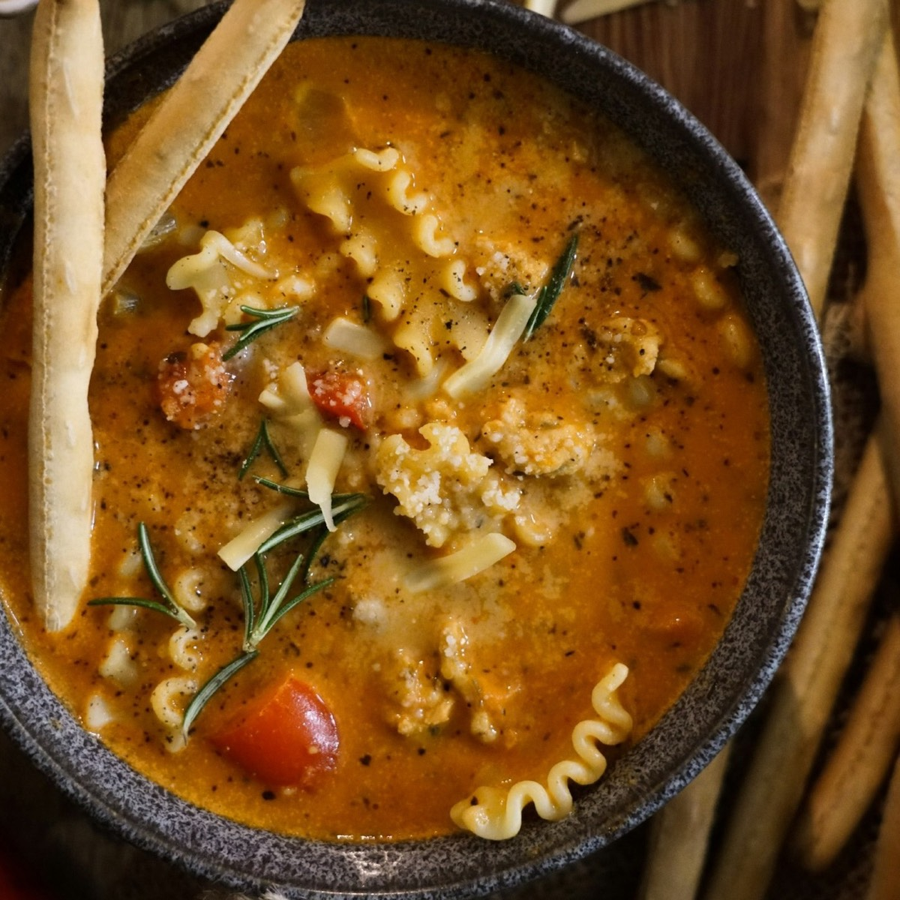

Lasagna Soup
Everything that makes lasagna good, in a bowl, with no layering and no oven.

Stock photo by Corryn Burtenshaw on Unsplash. It shows this kind of dish; yours will look a little different.
- Pot
- one medium pot, 3 quarts or larger (about 8 inches across)
- Time
- 30 minutes, start to eating
- Hard part
- none. Breaking the noodles is the fun part.
You need
| For one | For two | |
|---|---|---|
| Italian sausage, raw (mild or hot) | 4 oz (1 link) | 8 oz (2 links) |
| Garlic | 1 clove | 2 cloves |
| Marinara sauce (a jar) | 3/4 cup | 1 1/2 cups |
| Chicken broth | 1 1/2 cups | 2 1/2 cups |
| Lasagna noodles, dry (regular, not no-boil) | 2 | 4 |
| Ricotta cheese | 2 tablespoons | 1/4 cup |
| Shredded mozzarella | 2 tablespoons | 1/4 cup |
Also: a knife, a cutting board, a wooden spoon, a ladle or large spoon, a bowl, measuring cups and spoons, and an instant-read thermometer if you have one. Optional: dried basil, red pepper flakes.
Contains: wheat, milk. Check your labels.
About the noodles. Buy regular dry lasagna noodles. A box marked "no-boil" or "oven-ready" holds thinner noodles made to soften in the oven without boiling. They fall apart in soup.
Swaps. Ground beef works in place of sausage: add 1/2 teaspoon of salt and 1/2 teaspoon of Italian seasoning (a jar of mixed dried herbs, in the spice aisle). It is done at the same 160°F. No ricotta: cottage cheese works. Any short pasta works in place of broken lasagna noodles.
The rest of it. Sausage usually comes in a pack of five links. Freeze the ones you are not cooking today in a zip-top bag, use them within 2 months, and thaw them overnight in the fridge, not on the counter. Marinara: put the lid back on the jar, keep it in the fridge and use it within 5 days, on pasta or as a dip for bread. Ricotta: keep the tub closed in the fridge and use it within a week of opening, on toast or stirred into hot pasta. Broth: close the carton, keep it in the fridge, and use it within the number of days printed on the carton.
Allergens. Contains wheat (noodles) and milk (ricotta, mozzarella). Some lasagna noodles contain egg, and sausage, sauce and broth vary by brand, so check every label if you are cooking for someone with an allergy.
Before you turn on the stove
- Peel the garlic and chop it small. A clove is one segment of a garlic bulb. Pull one off, press it with the bottom of a mug until the papery skin cracks, and peel the skin away.
- Break each lasagna noodle into pieces about the size of a cracker. Do it over the bowl; pieces fly.
- Measure the marinara and the broth.
- Do the sausage last. If it is in links, slit the skin lengthwise with the knife and peel it off. Throw the skin away. Drop the meat straight into the cold pot.
- Wash your hands, the knife and the board with hot water and soap before you touch anything else. Raw sausage should not touch anything you eat uncooked.
Cook
- Brown the sausage. Put the pot, with the sausage in it, on medium-high heat, about three quarters of the way up the dial. Set a timer for 5 minutes. Break the sausage up with the spoon into small crumbles as it cooks, and keep stirring. You do not need oil; the sausage makes its own. When the timer rings, every crumble should be browned. Break the biggest one open with the spoon: there should be no pink inside. With a thermometer, 160°F in the biggest piece. If you see any pink, cook 2 more minutes and check again.
- Add garlic. Add the garlic. Stir for 30 seconds. You should smell it.
- Add liquid. Pour in the marinara and the broth. Stir, scraping the bottom of the pot. Turn the heat up to high, the top of the dial, until it bubbles all over.
- Add noodles. Add the broken noodles. Stir so they do not stick together.
- Simmer. Turn the heat down to medium, the middle of the dial, so it bubbles gently. That gentle bubbling is a simmer. Set a timer for 15 minutes. Stir every 3 minutes. Start biting a noodle piece at 12 minutes. The noodles are done when a piece is soft all the way through when you bite it. If the soup gets thicker than you like, add 1/2 cup of water.
- Taste. Turn off the heat. Taste the broth. Jarred sauce and sausage are salty, so it may need nothing. If it tastes flat, add a pinch of salt.
- Serve. Ladle into bowls. Put a spoonful of ricotta on top and sprinkle the mozzarella over it. The heat melts the cheese in a minute.
If something goes wrong
- Noodles still firm after 15 minutes: give them 3 to 5 more. Brands differ.
- Too thick, more like pasta than soup: add water 1/4 cup at a time. Still good either way.
- Greasy on top: tilt the pot and spoon some off, or blot the surface with a paper towel.
Leftovers
Put leftovers in a covered container in the fridge within 2 hours of cooking, eat them within 3 to 4 days, and reheat until steaming hot all the way through (165°F if you have a thermometer). The noodles keep soaking up broth in the fridge, so add a splash of water when you reheat. Keep the ricotta and mozzarella off the part you plan to save, and add them fresh.
The amounts for two were checked against 3 published versions of this dish; the amounts for one are scaled from them.
In the app this recipe is one step to a screen, with the amounts beside each step and timers that ring when your phone is locked. It is free, with four other complete recipes. First Pot for iPhone and iPad.